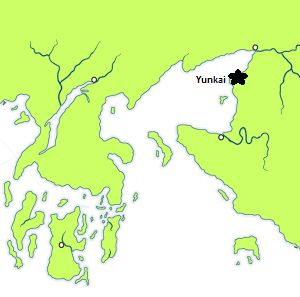

Yunkai
Yunkai, dubbed the Yellow City, is a city on the eastern coast of Slaver’s Bay. To the west lies the island of Yaros. North of Yunkai is no-man’s land. Its main export is slaves. Its main trade is in bed slaves. The city is made of yellow bricks, with crumbling walls and tall, stepped pyramids. Their emblem is a harpy; a woman’s torso, wings of a bat instead of arms, legs of an eagle and a scorpion’s tail. Its talons grasp a whip and an iron collar. They are ruled by slavers, called the Wise Masters. They speak a dialect of Valyrian.
Yunkai can field an army of roughly five thousand men, all slaves.
Map on Next page.

Map on Next page.